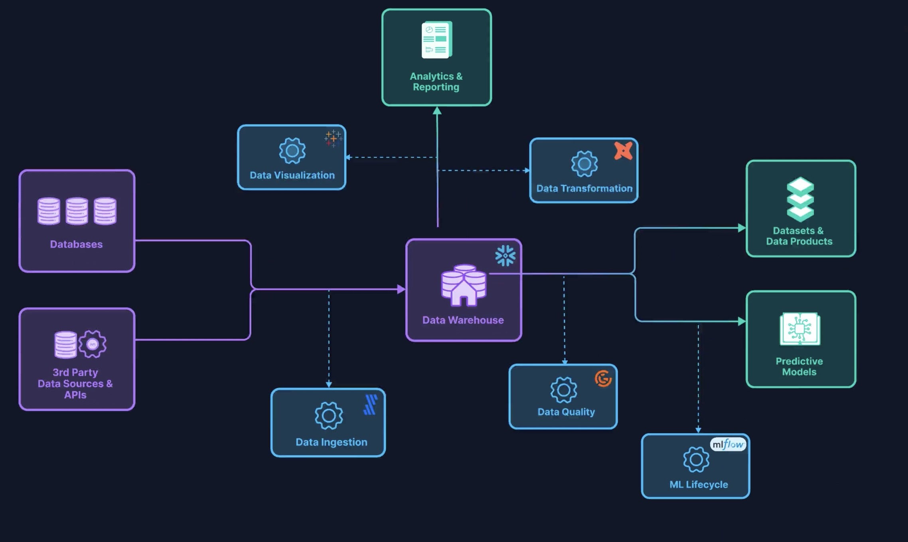

Week 10: ETL Pipeline Orchestration with Airflow
DSAN 6000: Big Data and Cloud Computing
Fall 2025
Pipelines for Triggered Execution
…HEY! WAKE UP! NEW DATA JUST CAME IN!

You before this week:
- Sprint to your
.ipynband/or Spark cluster - Load, clean, process new data, manually, step-by-step
- Email update to boss
You after this week:
- Asset-aware pipeline automatically triggered
- Airflow orchestrates loading, cleaning, processing
EmailOperatorsends update
Pipelines vs. Pipeline Orchestration

Key Airflow-Specific Buzzwords
(Underlined words link to Airflow docs “Core Concepts” section)
Directed Acyclic Graph (
DAG): Your pipeline as a whole!DAGs consist of multipletasks, which you “string together” using the control flow operators>>and<<[Ex ]
second_task,third_taskcan’t start untilfirst_taskcompletes:first_task >> [second_task, third_task] # Equivalent to: first_task.set_downstream([second_task, third_task])[Ex ]
fourth_taskcan’t start untilthird_taskcompletes:fourth_task << third_task # Equivalent to: fourth_task.set_upstream(third_task)What kinds of
tasks can we create? Brings us to another concept…
Operators: What Kind of task?
- “Core”
Operators:BashOperatorandPythonOperator
- + Hundreds of “community provider”
Operators: HttpOperatorS3FileTransformOperatorSQLExecuteQueryOperatorEmailOperatorSlackAPIOperator
+ Jinja templating for managing how data “passes” from one step to the next:

Task vs. Operator: A Sanity-Preserving (More than Technical) Distinction
From Operator docs:
When we talk about a
Task, we mean the generic “unit of execution” of aDAG; when we talk about anOperator, we mean a [specific] pre-madeTasktemplate, whose logic is all done for you and that just needs some arguments.
Task:

Operator:
Concepts \(\leadsto\) Code
The full Airflow “ecosystem” is running once you’ve started each piece via the following (bash) commands:
The schedule Argument
(Airflow uses pendulum under the hood, rather than datetime!)
dag_scheduling.py
from airflow.sdk import DAG
import pendulum
dag = DAG("regular_interval_cron_example", schedule="0 0 * * *", ...)
dag = DAG("regular_interval_cron_preset_example", schedule="@daily", ...)
dag = DAG("regular_interval_timedelta_example", schedule=pendulum.timedelta(days=1), ...)Cron: Full-on scheduling language (used by computers since 1975!)
crontab.sh
# ┌───────────── minute (0–59)
# │ ┌───────────── hour (0–23)
# │ │ ┌───────────── day of the month (1–31)
# │ │ │ ┌───────────── month (1–12)
# │ │ │ │ ┌───────────── day of the week (0–6) (Sunday to Saturday)
# │ │ │ │ │
# │ │ │ │ │
# │ │ │ │ │
# * * * * * <command to execute>Cron Presets: None, "@once", "@continuous", "@hourly", "@daily", "@weekly"
External Service Integration
| Service | Command |
|---|---|
| AWS | pip install 'apache-airflow[amazon]' |
| Azure | pip install 'apache-airflow[microsoft-azure]' |
| Databricks | pip install 'apache-airflow[databricks]' |
| GitHub | pip install 'apache-airflow[github]' |
| Google Cloud | pip install 'apache-airflow[google]' |
| MongoDB | pip install 'apache-airflow[mongo]' |
| OpenAI | pip install 'apache-airflow[openai]' |
| Slack | pip install 'apache-airflow[slack]' |
| Spark | pip install 'apache-airflow[apache-spark]' |
| Tableau | pip install 'apache-airflow[tableau]' |
(And many more:)
Jinja Example
homepage.jinja
<h4>{{ me['name'] }}'s Favorite Hobbies</h4>
<ul>
{%- for hobby in hobbies %}
<li>{{ hobby }}</li>
{%- endfor %}
</ul>render_jinja.py
from jinja2 import Template
tmpl = Template('homepage.jinja')
tmpl.render(
me = {'name': 'Jeff'},
hobbies = [
'eat',
'sleep',
'attend to the proverbial bag'
]
)rendered.html
<h4>Jeff's Favorite Hobbies</h4>
<ul>
<li>eat</li>
<li>sleep</li>
<li>attend to the proverbial bag</li>
</ul>\(\leadsto\)
Jeff's Favorite Hobbies
- eat
- sleep
- attend to the proverbial bag